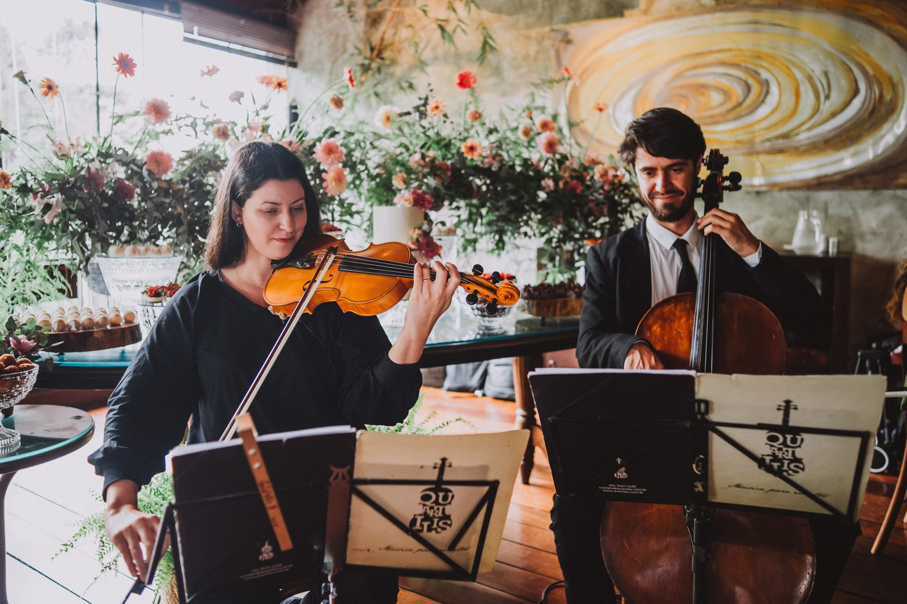

Homenagens musicais ao vivo · Curitiba e região
Um presente que emociona e marca a vida de quem você ama. Do violino solo à voz e violão, a Quartilis leva música ao vivo até o seu momento especial, desde 2002.

A serenata é uma homenagem musical ao vivo que emociona em pedidos de casamento, aniversários, bodas e datas especiais. Em Curitiba e região, levamos música de qualidade até o momento certo, com o instrumento e o repertório escolhidos junto com você.
Presença e emoção
Você escolhe o instrumento e as músicas com a nossa consultoria, e nós levamos a serenata até o local. Recomendamos de 5 a 6 músicas, cerca de 15 a 20 minutos, o tempo ideal para uma homenagem inesquecível em Curitiba e região.
Para eternizar ou surpreender de longe
Gravamos as músicas exclusivamente para a sua serenata e editamos com seus vídeos e fotos, criando um presente totalmente personalizado. Cada serenata virtual é única, pensada para emocionar.
Momentos reais de serenatas do Quartilis em Curitiba e região.
Não sabe qual música escolher? Reunimos sugestões que combinam com cada tipo de homenagem para te inspirar.
Ver sugestões de músicasHistórias, ideias e datas especiais para presentear com música em Curitiba e região.
Ler o blog